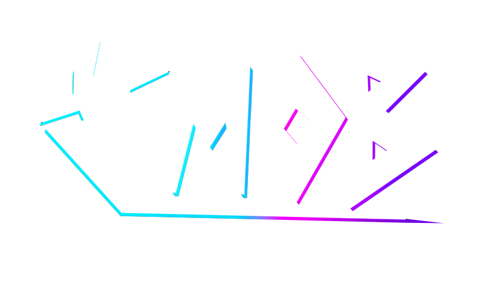

Poppy Playtime
Poppy Playtime, développer par Mob Entertainment était un jeu indépendant de type survival horror. Puis le studiois c'est dévellopper et aujoud'hui on peut considérer leur jeu comme des triple A
Des début à du jeux à aujourd'hui :
L'idée de Poppy Playtime a été imaginée à l'origine par le directeur du jeu Isaac Christopherson,
déclarant que les gens appelaient la plupart des jeux d'horreur indépendants "Walking Simulators", donnant à MOB Games l'idée de " créer quelque chose avec un gameplay qui ne semble pas si banal,tout en restant excitant, terrifiant et unique.

Mob Games Qui sont-il ?

Mob Entertainment a été fondée en 2015 par Seth et Zach Belanger sous le nom d'EnchantedMob,
se constituant rapidement une communauté de fans. Ils ont ensuite décidé de passer à l'étape supérieure
et d'ouvrir un bureau à Saint-Louis,dans le Missouri, aux États-Unis.Zach et Micah Preciado
de ZAMination les ont rejoints en tant que directeurs créatifs. D'autres animateurs ont également
intégré l'entreprise pour contribuer à concrétiser la vision de Seth et Zach.
Plus tard, la société a changé de nom pour devenir Mob Entertainment, marquant ainsi le début d'une nouvelle ère.
Les Musique, les Partenaria et les Fan-Made :
Poppy Playtime est un jeu d’horreur qui a créé une grande communauté de fans. La licence a notamment collaboré avec des influenceurs
et des artistes comme CG5, qui a réalisé des musiques inspirées de son univers, comme Sleep Well pour le chapitre 3 et Wrong Side Out pour le chapitre 5.
De leur côté, les fans créent aussi leurs propres chansons, animations, vidéos et théories autour des personnages et de l’histoire.
Cela montre que Poppy Playtime rassemble une communauté qui participe activement à faire vivre l’univers du jeu.